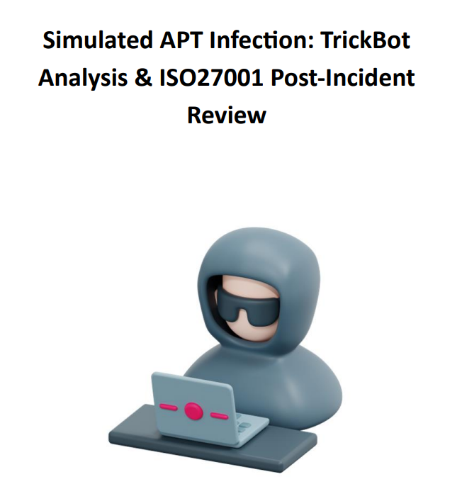

Hi, I'm Ahmad Shakla, a Cybersecurity student at Al-Hussien Technical University (HTU) specializing in Red Team operations, Active Directory exploitation, and detection engineering.
My work focuses on simulating real-world adversaries inside enterprise environments. I have performed advanced Active Directory attacks including DCSync, Golden Ticket abuse, resource-based constrained delegation, ACL exploitation, and lateral movement across segmented networks.
I combine red team tradecraft with blue team detection logic — ensuring not only compromise simulation, but measurable defensive coverage.


Conducting threat analysis, vulnerability research, and automating decryption key brute-forcing with Python during a virtual experience at AIG.
Hands-on Active Directory administration including domain joining, privilege assessment, and reporting. Shadowed engineers in firewall administration and supported web security assessments aligned with OWASP Top 10. Designed and deployed a simulated SOC in Azure using Wazuh SIEM, Sysmon, and Aurora EDR, mapping detections to MITRE ATT&CK and ISO 27001 controls.
Investigated cyberattacks and produced risk assessments with improvement recommendations during a virtual experience at Datacom.

Compromised an enterprise Active Directory environment using DCSync, Golden Ticket abuse, resource-based constrained delegation, and ACL misconfiguration attacks. Performed lateral movement across segmented networks using Ligolo-NG and Chisel.

Simulated a TrickBot-style infection in a Windows AD lab. Extracted IOCs using Suricata and Wireshark, mapped attacker behavior to MITRE ATT&CK, and developed custom Sigma and YARA detection rules. Produced a post-incident ISO/IEC 27001 compliance report.
Reverse-engineered a malicious PowerShell script delivered through a fake verification scam. Analyzed AES and Base64 encryption routines, identified registry persistence mechanisms, and documented detection improvements for SOC monitoring.

Investigated Active Directory breaches using Windows event logs and MITRE ATT&CK mapping. Built detection logic using regular expressions and improved visibility into credential abuse techniques.

Designed a segmented Layer 2 network using VLANs and port security. Implemented access control policies to prevent unauthorized device connections and improve internal traffic isolation.